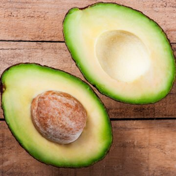
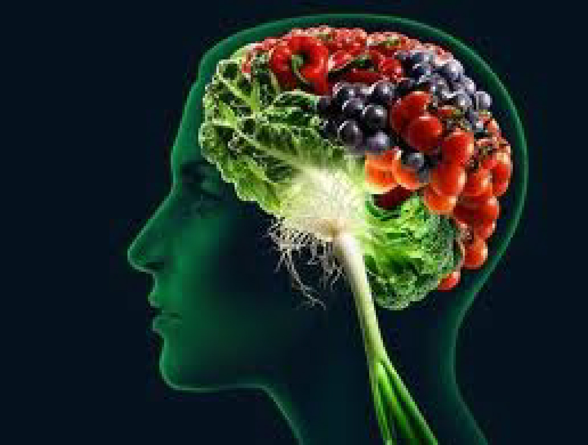

About Brain foods
We at brainfoods provide the information necessary to maintain a healthy mind with information on
healthy foods for good brain development and links to places you can purchase these foods
Below are two lists with the different types of Brain foods and foods that have a negative impact on the brain. Brain foods are listed in blue and
the bad foods are listed in red
Types of Brain foods
- Avocados
- Blueberries
- Oats & Grains
- Legumes
- Salmon
Bad foods for The Brain
- Alcohol
- High Sugar drinks
- Corn Syrup
- White Bread
- Hydrogenated fats
What do Brain foods do

Brain foods can help keep the blood vessels of the brain clear of blockages and allow nerve cells to function
at a high level this can specifically be attained with a heavy omega 3 fatty acids diet. Below is a small list of foods high in Omegy 3.
Omega 3
- Fatty fish
- Chia Seeds
- Walnuts
- Spinich
- Soyabeans
